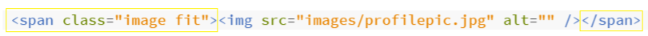

This project is formed by two individual parts and one group one. The subject I will talk about is 3D printing and 3D scanning.
In the first part of my project I have been designing a model for 3D printing using Autodesk Fusion 360 and Prusa MK3+. In this picture below you can see the designing process for a lamp, actually a multifuncional furniture object, can be seen also as a vase.

After that I exported the file in stl and imported in Prusa.
I cleaned the base of the printer and applied glue and I started to preheating the panel. Here some pic and video of the 3D printing process

The final result


Afetr that I noticed something inside my object caused by 3D Printing over Extrusion. Over extrusion in 3D printing refers to an excessive amount of filament emitted from the 3D printer nozzle onto the build bed. This issue typically has something to do with improper settings of parameters in 3D printers, such as printing temperature and speed.

In the second part of the project, I have 3D scanning an object, a ship using Polycam. I have been taking multiple pictures and get a video as a production result.
To get the right image I had to make sure to change the 'src='-line to the path to the image for every screenshot.
I had a problem with the size of the images. They were too big and extended outside the screen. To fix this, I tried to find code to automatically make the images fit but this was hard and required CSS-coding. So I looked at the Story-template and found a section where the images were made to fit the screen. So the person who made the Story-template had already fixed this problem and all I had to do was add the following code around the line that linked to the image:

A challenge I encountered, while working on my website, has been to create a subpage from the presentation of the first project, a subpage to which get access from pushing the button “Learn more” under each main chapter title. This challenge has been overcome understanding what to write in my code on brackets and how to do it. To create a subpage, I created a new HTML-file in the folder that also contains the index.html-file, and called it project1.html. I copied a section from the Story live demo near the bottom called 'Additional Elements' and edited it to make this project section and made sure the new website looked right. Then I tried to find guides on how to make a subpage on Github. Eventually I realized that simply by uploading the file to the repository, Github publishes it automatically.
All I had to do was use the website address form 'https://sabrinachiappini.github.io/Computer-aided.manufacturing' and add '/project1.html' at the end.
CONCLUSIONS
In my website I will talk about myself through my resume and will make the portfolio of this course in computer manufacturing.
I think that many different topics will be covered and that it will be enjoyable to introduce them through this website. In my final project I would like to use the knowledge gained during the course and talk about manufacturing, design and materials choices that are fundamental basics of digital production technology and computer- aided production.